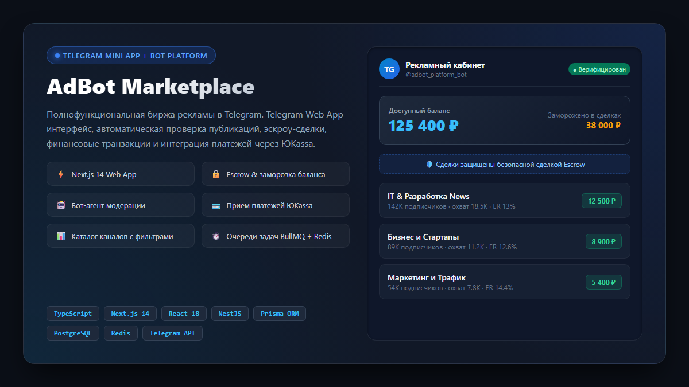

Telegram Mini AppAdBot Marketplace — Биржа рекламы в Telegram
Комплексная экосистема автоматизации покупки и размещения рекламы в каналах: реактивный Web App (TMA), финансовый процессинг со сделками Escrow и фоновые очереди.
Личный кабинет рекламодателя и владельца каналов внутри Telegram
Безопасная сделка (Escrow) с автоматической заморозкой и выплатой
Фоновая проверка выхода постов и интеграция эквайринга